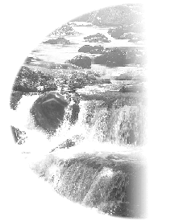

| Sous les projecteurs |
Le 20 février 1996 (Initialement en anglais) |
 C'était l'histoire d'un moine qui est devenu un singe. Quand le Bouddha est venu sur Terre pour enseigner le dharma, la Vérité, il y avait plusieurs moines qui étudiaient avec lui. Il y en avait quelques uns qui avaient déjà atteint la sainteté, mais beaucoup l'ignoraient. Les autres moines se moquaient parfois d'eux parce qu'ils n'avaient pas l'air bien et avaient l'air un peu "ridicules". Il y avait un moine qui était très, très méchant. À chaque fois qu'il voyait un de ces moines descendre en courant de la montagne, il se disait, " Tu as l'air d'un singe dévalant la colline. " Parce qu'il a critiqué ce moine en le traitant de singe, il a dû renaître en singe pendant 500 vies.
Alors, soyez prudents et ne vous moquez pas des moines, parce que la seule différence qui existe entre un moine et un singe c'est deux lettres. De toute façon, si vous vous moquez d'un moine ordinaire, peut-être ça va, mais si ce moine a déjà atteint la sainteté, alors vous aurez des problèmes. Vous ne savez jamais lequel est déjà saint ou celui qui a déjà atteint un niveau très élevé dans sa pratique spirituelle, alors soyez vigilants.
Surtout, vous devez prendre soin des moines que j'envoie dans votre pays pour vous enseigner le dharma et vous ne devez pas vous moquez d'eux ni même essayez de les séduire. Selon le bouddhisme, si nous essayons de détourner un moine qui a étudié avec un Maître vivant, c'est un très grave péché. Je vous lirais certains avertissements. J'ai envoyé beaucoup de moines à l'étranger et beaucoup moins sont revenus, et ensuite vous me demandez d'en envoyer davantage.
Je ne peux pas produire des moines. Je peux seulement vous envoyez ceux que j'ai, ceux que Dieu m'a envoyés pour vous servir, et je ne peux entraîner que ceux qui sont capables. Ce ne sont pas tous les moines qui sont capables de mémoriser tous les enseignements, plus particulièrement le processus de l'initiation. Parfois ils sont vieux, pas très instruits et pas très doués pour l'enseignement et la théorie. Peut-être qu'ils peuvent méditer beaucoup et qu'ils ont atteint un niveau spirituel élevé mais ils ne sont pas très bons pour aller à l'extérieur et enseigner à d'autres ou montrer le processus de l'initiation. Ainsi je ne peux pas utiliser, pour vous servir, tous les moines qui viennent ici. Néanmoins, tous ceux qui sont intelligents et bons, je vous les envoie à mes frais et même là, vous essayez de les attraper. Certains d'entre vous, pas tous, la plus part d'entre vous ne le fait pas car vous êtes déjà mariés, Dieu merci !
Quand je dis "moine", je veux dire aussi "nonne", les gens les volent tous les deux. Je ne comprends pas pourquoi, il y a tant de monde sur Terre, et les gens recherchent les moines et les nonnes, me laissant handicapée et perdant mon temps à entraîner de nouvelles personnes. Et s'il y a des nouveaux, vous ne me les envoyez pas, vous les gardez pour vous. Vous gardez fermement vos maris, fils, filles et épouses et en même temps, me demandez de vous envoyer des moines et des nonnes pour vous enseigner le dharma, si je ne peux pas venir. Naturellement, cela est difficile pour moi d'aller partout toute seule pour vous enseigner personnellement, ainsi les moines et les nonnes sont mes oreilles, mes yeux, mes mains et mes pieds pour m'aider à vous servir. Néanmoins, parfois vous coupez mes membres, mes instruments et vous me rendez handicapée. Et alors, vous vous plaignez que je n'envoie personne pour vous enseigner, plus particulièrement les pays comme Aulac ou la Chine, là où je ne peux pas aller personnellement à cause de la situation politique actuelle. Bien, j'espère que tout ira mieux à l'avenir pour le bien de tous.
Ces moines qui sont moins connus peuvent passer de façon plus anonyme incognitos dans ces pays pour vous aider, mais j'en ai beaucoup envoyés et peu me sont revenus. C'est très embarrassant. C'est une perte, si j'en envoie 5, je devrais en ravoir 10. Habituellement lorsque les gens font des affaires, ils prospèrent, avec le temps, ils ont plus d'entrées d'argent et d'intérêts. Mais maintenant on dirait que cette affaire semble m'apporter peu de bénéfices. Bien, il y en a quand même. Peut-être que je perds un moine, mais que je gagne cent personnes. Ce n'est pas mauvais, mais ces centaines de personnes ne peuvent pas être utilisées comme moines et nonnes, elles sont laïques. Par conséquent, ceci n'est pas très bien pour moi.
Je n'ai pas tant de moines. D'ailleurs, certains doivent aider à l'enregistrement des vidéo et des cassettes audio et imprimer les livres et les magazines pour vous. Pensez-vous que toutes ces choses viennent du ciel, ou que vous les cueillez de la neige ou quelque chose de ce genre ? Pensez-vous que toutes les vidéo et cassettes audio sont bonnes ? Non, ils doivent les copier et assembler toutes les bonnes parties ensemble. Quelque fois, ils m'enregistrent comme ça au hasard lorsque je suis en train de marcher et de parler avec vous de n'importe quoi, en racontant des blagues, ou en disant des choses qui ne sont pas réellement nécessaires pour votre pratique. Ainsi, ils doivent les copier. De plus, ce ne sont pas tous les moines qui peuvent faire ce travail à cause de l'équipement qui est sophistiqué. Ils doivent apprendre pendant un certain temps. Ils doivent avoir de la patience, des idées sur le montage artistique et savoir comment bien utiliser les machines. Donc, il y a beaucoup de travail à faire et je n'ai pas beaucoup de personnes. Si vous réalisez la somme de travail que je fais, alors vous saurez combien c'est difficile pour moi. Naturellement, cela pourrait être plus facile. Je n'ai pas besoin de vidéo, je n'ai pas besoin de cassettes audio. Je n'ai besoin de rien, ainsi c'est plus facile. Je n'ai besoin de personne.
En plus, tous ces moines ne sont pas tous des anges. Ils me posent aussi des problèmes. Il me donnent des maux de tête et font des erreurs. Ils font des choses qu'ils ne doivent pas faire et ne font pas celles qu'ils devraient faire etc. Il y a beaucoup de choses que Je dois supporter, à part de les entraîner et aussitôt que Je les ai bien entraînés, il y a des gens qui, par exemple, me les enlèvent. Alors, je perds une main de plus, un autre pied, un autre oeil et une autre oreille. Le travail ralentit et les êtres sensibles qui attendent avec empressement l'initiation sont retardés. Ils doivent attendre encore longtemps et quelque fois, ceci est trop long pour eux. Ils peuvent mourir avant de recevoir l'initiation, on ne sait jamais, la vie est éphémère. Ils doivent être végétariens pendant trois mois et qui sait ce qui peut arriver pendant ces trois mois. Parfois cela prend plus de trois mois avant de pouvoir la recevoir; ils doivent attendre huit mois ou un an. Si je n'ai pas assez de messagers Guan Yin à envoyer, alors ils doivent attendre plus longtemps et vous savez ce que c'est que d'attendre pour recevoir l'initiation. Plusieurs d'entre vous connaissent l'attente, le désespoir relatif à l'attente de l'initiation, car vous savez que la vie est éphémère et vous risquez de ne pas la recevoir avant de quitter ce monde. Le temps est si court, vous n'aurez peut-être pas assez de temps pour pratiquer.
Le monde est un chaos parce que nous ne faisons pas la volonté de Dieu. Nous l'obstruons avec notre ego et alors nous créons des problèmes pour la descente du royaume céleste sur Terre. J'espère qu'à l'avenir, lorsque je vous enverrai un moine ou une nonne, même s'ils sont habillés comme des laïques pour voyager plus confortablement, vous ne vous attacherez pas à la forme, ou à la différence. Respectez-les comme vous me respectez. Donnez-leur tout ce dont ils ont besoin avec respect et honneur, ne les gâtez pas trop, ne leur donnez pas trop de nourriture ou d'attention. Donnez-leur juste ce dont ils ont besoin, ce qu'ils vous demandent, ainsi ils pourront mieux vous servir et ils auront l'encouragement et la protection nécessaires pour continuer leur travail.
Je vous parle à vous aussi bien qu'aux futurs initiés. J'espère, je vous demande, je vous supplie de faire cela parce qu'un moine ou une nonne est aussi né parmi nous. Ils ont aussi un corps humain comme vous. Ils ont un corps avec des besoins physiques et des tentations physiques. C'est déjà très difficile pour eux de résister à ces tentations. C'est suffisamment difficile pour que vous ne les tentiez pas davantage en profitant de votre position pour aller vers eux comme les aider à conduire ou à préparer un repas. Vous affaiblissez leurs résistances, vous vous donnez un mauvais karma et empêchez un futur Maître à servir tout autre être sensible dans la souffrance. J'espère que vous comprenez ceci pour la première et dernière fois. (Applaudissements).
Je n'ai jamais demandé que vous deveniez des moines ou des nonnes. Je n'ai jamais dit cela. Mais s'il y a des gens qui veulent dédier leur vie à servir les êtres sensibles dans leur souffrance, vous devez les honorer, les aider et les protéger pour qu'ils ne cèdent pas aux tentations. Vous ne devez jamais créer davantage de problèmes. Vous ne devez jamais essayer de satisfaire votre besoin temporaire de luxure, ou le désir pour un contact physique, et même pour de l'amour physique, et ainsi les rabaisser à un niveau de conscience plus bas, juste pour vous rendre vous-même heureux, juste pour satisfaire vos désirs égoïstes. Je ne parle pas du fait que vous créer des péchés ou non avec cela. Je vous parle de votre propre conscience. Un moine ou une nonne peut aider plusieurs personnes au niveau spirituel et les élever au-dessus du processus de la souffrance causée par la transmigration, de l'enfer même, incluant vos propres parents, amis, femmes, maris et enfants. Si vous les garder que pour vous, combien de milliers de personnes souffrent, le savez-vous ?
Est-ce que vous pensez aux conséquences de vos actions lorsque vous voulez satisfaire vos égoïstes désirs physiques de luxure ? Vous ôtez à plusieurs êtres sensibles ce qui leur est précieux, cher, et vous laissez des milliers de gens souffrir, sans "lumière". Vous avez déjà la "lumière", vous avez déjà tout ce dont vous avez besoin, et vous privez de "lumière" des milliers d'autres ou peut-être des centaines de milliers, ou des millions, incluant leurs familles et amis décédés, de 5 ou 6, ou même 7 générations. Vous les privez de l'aide du Maître et de Dieu. Pensez-vous réellement aux conséquences ? Ressentez-vous de la compassion pour ces gens qui souffrent ? Je vous demande de penser encore à cela.
Je ne vous menace pas de karma, de péché, du feu de l'enfer, et toutes ces choses là. Cela ne me dérange pas que vous fassiez n'importe quoi, le Bouddha est miséricordieux, Dieu est compassion. Il vous libérera éventuellement. Mais vous seul, si vous avez nui à des milliers de personnes, vous en sentirez le poids dans votre conscience, personne d'autre ne vous jugera ou vous fera des remarques. Vous êtes un futur Maître, vous avez une conscience, et depuis que votre sagesse s'est éveillée, vous avez une connaissance plus claire que les autres êtres sensibles. Vous savez tout sur ce que vous devez faire ou ne pas faire, ainsi il n'y a personne d'autre pour vous jugez, seulement vous-même.
Quand je vous les envoie, je leur dis beaucoup de choses. Je leur dis de ne pas dormir dans votre lit car ils peuvent prendre vos vibrations, je leur dis de ne rien prendre de vous parce que lorsque vous leur offrez quelque chose, vous pouvez avoir une intention pas très propre. Ils ne le savent pas, et ceci les affectera. Je leur dis de ne pas se laisser vénérer par vous, de ne pas vous laisser vous incliner devant eux parce que j'ai peur que leur ego prenne de l'ampleur et que cela devienne difficile à contrôler pour eux. Ils chutent de différentes façons; avec l'ego, avec les tentations physiques et les louanges flatteuses. Tout peut les faire chuter. Et vous leur offrez quelque chose que vous ne devez pas, la plupart du temps, juste pour recevoir des avantages égoïstes, parfois juste pour qu'on vous traite mieux, parfois juste pour avoir plus d'informations que les autres et parfois à cause du désir physique. Peu importe ce que c'est, ce n'est bon ni pour eux ni pour vous.
Je leur dis beaucoup de choses. Mais ils vont à l'extérieur, ils oublient, ils deviennent faibles, entourés par toutes ces tentations. Je leur dis de ne pas porter des vêtements trop beaux, de ne pas se montrer trop beaux, autant les hommes que les femmes, juste pour ne pas qu'ils s'attirent trop de problèmes Néanmoins, quelques-uns le font, d'autres comprennent mal mes bonnes intentions. Je leur ai dis : " Je suis l'actrice principale. Je porte différentes choses. Je fais des choses différentes. Vous avez un rôle différent à jouer. Vous n'avez pas à vous habiller de la même façon. Vous n'avez pas à faire pareil. " Comme dans un film, l'acteur principal porte certaines choses et les autres acteurs en portent d'autres. Ils n'ont pas à porter les mêmes vêtements que l'acteur principal. Même si Je porte de très beaux vêtements, Je sais comment agir avec moi, et eux ils ne le savent pas. À un certain degré, Je suis plus forte, mais parfois ils comprennent mal mes bonnes intentions, et parfois vous ne les aider pas et vous ne m'aidez pas. Vous créez davantage d'ennuis que d'aide, et c'est pour cela que nous avons des problèmes.
J'aimerais amener tout le monde dans la famille Guan Yin pour créer le paradis sur terre le plus tôt possible, mais il y a tellement d'obstructions. Le corps de chacun est déjà une obstruction au départ : parfois il est malade, parfois il est fatigué, parfois il a trop de karma et beaucoup de choses de ce genre. Et s'il rencontre davantage de tentations de l'extérieur, alors cela est très, très difficile.
Quand les moines et les nonnes demeurent ici, ils ont une meilleure protection parce qu'ils vivent seuls. Ils vivent ensemble, mais ils n'ont pas de contact avec la société. Ils font leur travail, comme écrire des histoires, imprimer le magazine, ou contrôler les livres et les traductions etc., ainsi ils sont occupés. Les gens n'ont pas beaucoup d'opportunités pour être près d'eux pendant une longue période de temps, c'est plus facile pour eux de demeurer à l'intérieur et de se concentrer. Mais lorsqu'ils vont à l'extérieur seuls, et qu'ils ont à agir avec plusieurs centaines ou milliers de personnes, tous les jours, avec la proximité du contact physique, c'est très difficile pour eux. Ils sont pris dans le champ magnétique des autres qui n'est pas toujours très pur, très propre, et plein de tentations, ainsi c'est très difficile pour eux de résister.
Parfois ils oublient de prier leur maître intérieur, ou ils sont eux-mêmes faibles et parfois le karma passé revient vers eux. S'ils oublient un seul moment le maître intérieur, ils auront des problèmes.
Ce n'est pas seulement quand je les envoie à l'extérieur qu'ils sont perdus, mais ici aussi. Parfois il y a des gens qui viennent au centre et qui créent des problèmes, ainsi cela est très difficile pour eux, pour moi pour les moines et les nonnes, de faire notre travail. Nous ne pouvons être égoïstes et nous cacher dans des caves et ignorer votre souffrance et votre désir ardent pour votre libération. Nous devons nous sacrifier, nous devons sortir et faire des choses que nous n'avons pas nécessairement le goût de faire. Nous devons parfois même avoir l'air ridicule. Nous avons à abaisser nos critères pour être au niveau de tous les êtres sensibles pour qu'ils se sentent proches, en affinité, pour leur enseigner la voie la plus élevée de la vie. Mais en faisant ceci, nous nous mettons en danger. Parfois les moines et les nonnes perdent de vue leur idéal monastique de renoncement, d'esprit de sacrifice, et ils chutent. Ce n'est pas entièrement leur faute; vous êtes aussi responsables que moi. Mais comme vous le savez, même Dieu ne force pas les gens. Dieu et Bouddha ne peuvent qu'encourager les gens et les protéger, peu importe ce qu'ils veulent être. Mais certaines fois, les êtres sensibles ne souhaitent pas recevoir la protection. Ils veulent faire les choses que leur corps physique et leurs désirs leur disent de faire et ils refusent l'aide et la protection de Dieu. Cela arrive.
D'accord je vais vous lire quelques prières, des sûtras bouddhiques concernant les gens qui sont moines, qui veulent le devenir, qui aident les gens à devenir moines et qui supportent les personnes qui sont moines, et cetera, ainsi vous pourrez savoir que ce que je vous dis est vrai. Si vous ne me croyez pas vous pouvez croire le Bouddha.
"Les bénédictions sont extrêmement grandes et diversifiées pour celui qui est devenu moine. Les bénédictions sont inconcevables pour celui qui a permis à son fils, à sa fille, à ses serviteurs d'entrer dans la vie monastique ou qu'il soit devenu lui-même moine. Les bénédictions de celui qui est devenu moine ou qui a permis à d'autres de le devenir dépassent de beaucoup les bénédictions de celui qui, par les moyens de la vertu de la charité, a obtenu le bien-être pour une durée de dix vies, ou de celui qui est né depuis plusieurs milliers d'années parmi les six royaumes des dieux. "
Entendez-vous cela ? Il y en a davantage ici.
"Quelqu'un peut demander pourquoi c'est ainsi. C'est parce que la vertu qui provient de la charité s'épuisera éventuellement, mais les bénédictions de celui qui devient moine vont au-delà des limites du temps et n'ont pas de fin. De plus, par la vertu d'observer les préceptes, quelqu'un peut devenir un sage qui possède les cinq pouvoirs surnaturels, qui se réjouit dans le royaume du Dieu Brahma, ou qui est doté d'un bien-être extrême. Mais les bénédictions de celui qui est devenu moine en suivant les enseignements de Celui qui est illuminé sont au-delà du concevable, et la bénédiction de la félicité du nirvana est indestructible.
Si quelqu'un devait construire un stupa des sept joyaux précieux, si élevé qu'il atteindrait le ciel des trente-trois dieux, les bénédictions qui en découleraient n'égaleraient pas celles de celui qui devient moine. Quelqu'un peut se demander pourquoi il en est ainsi. Car les hommes ignorants et non illuminés pourraient détruire le stupa des sept joyaux précieux, mais personne ne pourrait jamais détruire les bénédictions de celui qui est devenu moine. Si quelqu'un désire les bénédictions du dharma, il doit comprendre qu'il n'y a pas d'autre chemin que celui de devenir moine suivant l'enseignement d'Un illuminé.
Il n'y a pas d'enseignement supérieur à cela. C'est comme un brillant médecin qui guérit les yeux à des milliers d'aveugles en leur faisant retrouver la vue. Ou c'est comme un homme qui empêche une personne violente de crever les yeux à une centaine d'hommes. Bien que les vertus de ces deux personnes soient au-delà de la réalité concevable, les bénédictions de celui qui permet aux autres de devenir moines ou qui devient lui-même moine, sont encore plus grandes. Quelqu'un peut se demander pourquoi. C'est parce que les deux premiers, lorsqu'ils ont sauvé la vue des autres cela leur a apporté seulement une bénédiction de ce monde, le bonheur concernait des yeux de chair et de l'existence matérielle. Mais ceux qui permettent à d'autres de devenir moines ou qui deviennent eux-mêmes moines en s'aidant les uns les autres vont graduellement parvenir à atteindre l'oeil de sagesse suprême, et la nature de cet oeil ne sera jamais détruite, même jusqu'à la fin des temps. Par la bénédiction de sa vertu, les hommes et dieux se réjouiront de leurs inépuisables possessions et atteindront à la fin, la félicité de l'illumination. C'est parce que le dharma du moine détruit le royaume de Maya (ce qui veut dire illusion) et contribue à augmenter la lignée du Bouddha. Cela détruit les choses sans vertu, les mauvais dharmas et donne naissance à des enseignements vertueux. Cela détruit les impuretés et donne naissance au travail suprême de la vertu.
Le Bouddha a enseigné que les bénédictions pour devenir moine sont plus hautes que le Mont Meru (une très haute montagne sacrée de l'Inde), plus profondes que le fond de la mer, et plus étendues que le firmament."
Savez-vous comment grand est le firmament et combien le ciel est sans limite ? Cela est le mérite de celui qui devient moine ou qui permet à d'autres de devenir moines. Ceux-ci sont les mots de Bouddha. Je n'essaye pas de vous tenter.
"Très grave en vérité est la faute de celui qui gêne ou empêche une autre personne de devenir moine. Cela peut être comparé à un homme qui pénètre une maison totalement sombre dans laquelle il ne peut rien distinguer, qui tombe dans l'obscurité de l'enfer. Le résultat de tout ceci peut être comparé à toutes les rivières qui se jettent dans l'océan. Ainsi les péchés s'accumulent à l'intérieur de son être. C'est comme un grand incendie qui a lieu à la fin d'un monde éternel quand le majestueux Mont Meru est réduit en flammes et en cendres. Cet homme sera totalement brûlé par les flammes de l'enfer. Ainsi, les bénédictions de celui qui permet aux autres de devenir moines ou qui lui-même devient moine, sont extrêmement grandes. Celui qui devient moine se retrouve lavé, purifié par les eaux des sutras (les livres sacrés du Bouddha) et ses souillures sont lavées à grandes eaux. Il est totalement allégé des souffrances de la vie et de la mort et il devient une cause pour la félicité du Nirvana. Par la discipline, il suit les sentiers du royaume des préceptes purs, par l'oeil clair du dharma, il distingue les actes vertueux des actes non-vertueux de l'univers entier et par l'énergie de la pleine conscience, il parcourt l'Octuple Noble Chemin du Celui qui est Noble et arrive à la cité du Nirvana. Celui qui incite et permet aux personnes âgées et aux jeunes de devenir moine ou qui lui-même devient moine, très grandes en vérité sont ses bénédictions."...
Il y a beaucoup plus que cela, mais je pense que ceci devrait vous suffire. Cela était l'enseignement du Bouddha.
Il est très difficile de devenir un moine, plus particulièrement aujourd'hui avec tout le confort matériel et nous, êtres humains, avons la très nette et forte tendance à s'attacher à ce à quoi nous sommes habitués. Ceci est une des plus grandes raisons pour lesquelles nous renaissons et renaissons sans cesse dans le même monde, encore et encore. Au moment de mourir, nous sommes peu disposés à quitter ces choses avec lesquelles nous avons l'habitude de vivre. C'est la raison pour laquelle peu de gens peuvent quitter leur maison et devenir moine, sauf lorsqu'ils ont des problèmes avec leur famille. C'est la raison pour laquelle beaucoup de Chinois quelquefois ont des mauvaises conceptions : moines et nonnes sont ceux et celles qui sont très déprimés, qui n'aiment pas ce monde, qui ne peuvent pas vivre au-dehors parce qu'ils ont des problèmes avec leur famille ou peut-être aussi parce que leur amoureux les a rejetés. Par conséquent, ils viennent ici ou au temple pour devenir moine. Cela peut être le cas, pour certains, mais ce n'est pas vrai pour beaucoup d'autres moines. Ils sont devenus moines à cause de leur très haut idéal, idéal très distingué de sacrifice et de service envers les êtres humains, comme celui d'atteindre la sagesse suprême. Ceux-ci sont les vrais moines et nonnes et ils sont ceux que nous devrions protéger et vénérer comme des joyaux précieux de ce monde. Ils sont les "porteurs de lumière", ils sont les sauveteurs de ceux qui sont en enfer, ils sont ceux qui répandent les véritables enseignements parmi l'humanité, allumant les torches dans l'obscurité pour mener tous les êtres vers la suprême félicité et le bonheur éternel. Ces moines et nonnes sont difficiles à trouver. C'est pourquoi nous devons les respecter, les protéger, les aider et ne jamais nous permettre d'avoir, une seule fois à leur égard, une pensée qui, soit les rabaisse, soit les attire vers nous pour notre propre bénéfice ou désir.
De plus, chacun de nous, même si nous ne pouvons pas quitter la maison pour devenir moines et nonnes, devrions êtres moines et nonnes dans nos propres foyers. Nous devrions amoindrir nos désirs pour les besoins matériels, chaque fois que c'est possible. Nous devrions réfréner nos tendances à poursuivre les profits terrestre, la renommée et la célébrité pour l'amour du confort matériel. Nous continuons à faire des affaires, mais sans s'y attacher. Nous devons le faire dans le but de pourvoir à notre propre bien-être, à celui de notre famille et société, et non pas faire des affaires, juste pour devenir célèbre ou faire des bénéfices afin de mener une vie extrêmement luxueuse.
Quant à savoir comment nous faisons le travail dans ce monde, cela dépend de notre conception intérieure. Si notre conception est correcte, même si nous faisons des affaires ou dirigeons le pays tout entier, c'est toujours bien et nous pouvons encore obtenir l'illumination. Mais si notre conception est fausse, même si on est un moine, on est juste une espèce d'hypocrite - rien qu'un moine de l'extérieur; à l'intérieur, nous sommes peut-être qu'un singe.
Le singe n'est rien d'autre que le mental, dans lequel les désirs de convoitise pour la puissance, le pouvoir, la connaissance le tourmentent sans cesse. Nous devrions apprivoiser le singe pour devenir un vrai moine. Si nous voyons quelqu'un qui a obtenu le mérite et la bénédiction de devenir un vrai moine nous devons, de ce fait, l'aider, le protéger et faire toute chose en notre pouvoir pour le maintenir toujours dans une position élevée pour l'amour de tous les êtres vivants, y compris nous-mêmes. Protéger le moine signifie nous protéger aussi parce que si nous l'attirons, si nous le faisons chuter dans les désirs physiques, alors ce n'est pas seulement lui qui tombe, mais nous aussi. Nous sommes aussi celui qui tombe, nous nous créons beaucoup de lourds obstacles pour notre l'avenir. Quoi que nous fassions pour les autres, nous le faisons pour nous-mêmes. Alors, essayez de vous souvenir de ceci. D'accord ? Merci (applaudissements).